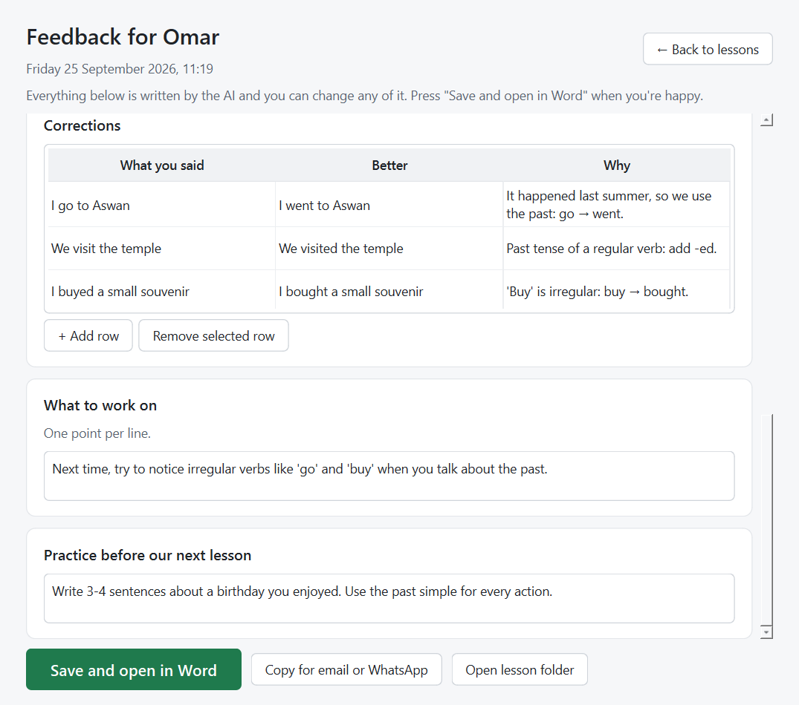
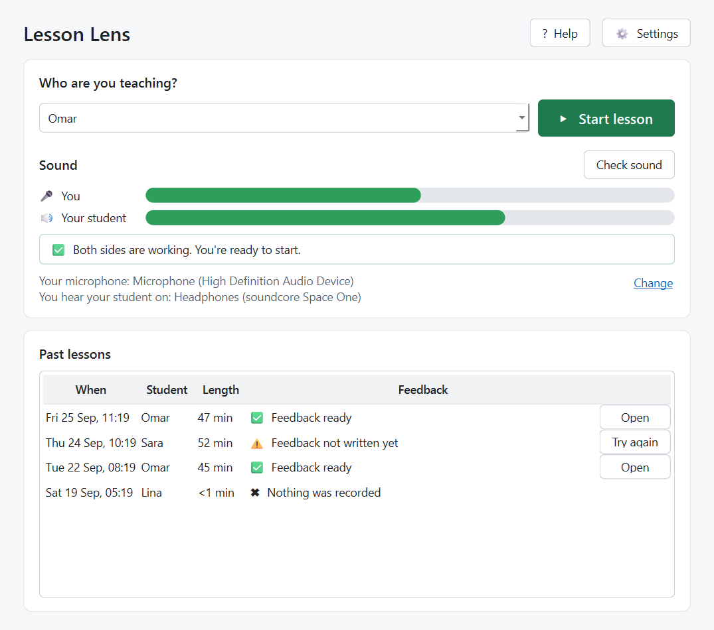
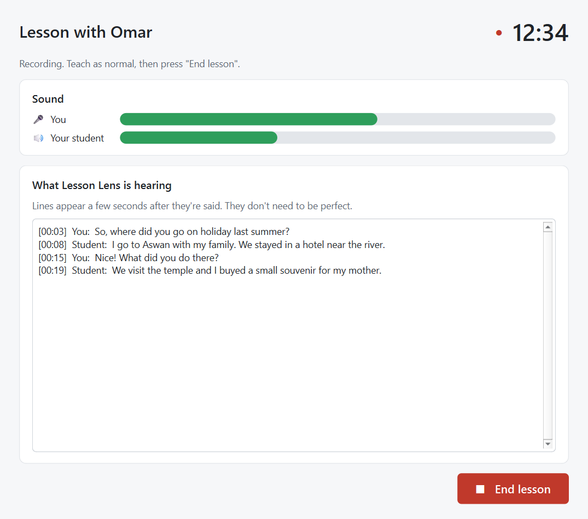
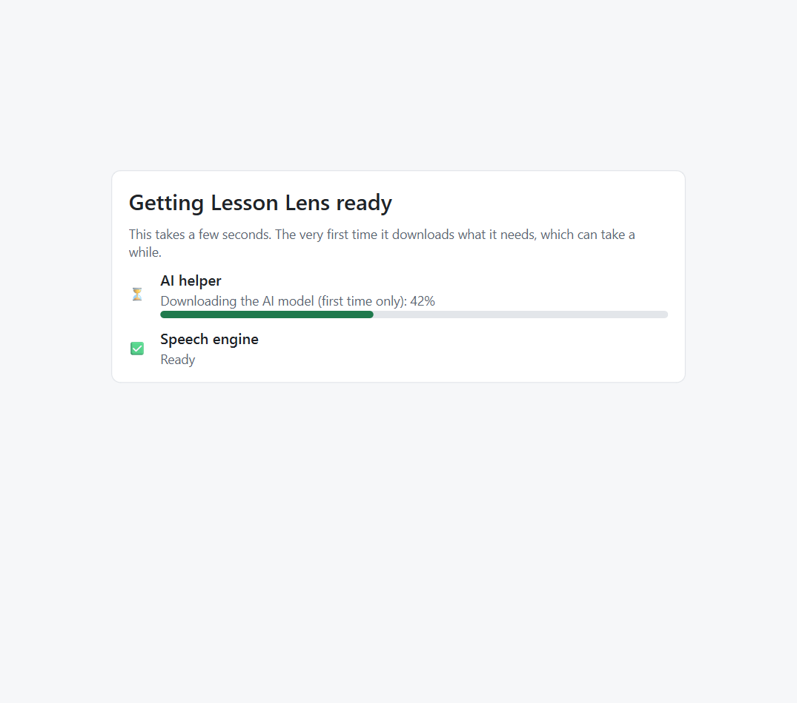

Lesson Lens records your online English lesson and writes clear feedback: what you covered, your student's mistakes with corrections, new vocabulary and homework. Edit it, then send it.
Free · Windows 10 and 11 · Nothing leaves your computer

Type your student's name and press Check sound. Say something, then play a video with someone talking. When both bars move, you're ready. Press Start lesson.

The bars show that you and your student are both being heard. When the lesson is over, press End lesson.

A minute or two later the feedback appears. Change anything you like, then press Save and open in Word or Copy for email or WhatsApp.

Tip: Tell your students you record lessons to write their feedback. For example: "I use an app that helps me write your feedback, so it records our lesson. The recording stays on my computer." With children, ask a parent first.
Yes.
No. The recording, the transcript and the feedback are made and stored on your computer, in Documents\Lesson Lens. The only time it goes online is to download the AI the first time, and to check whether a newer version of Lesson Lens is out. Neither sends anything about your lessons.
Yes, please. Let them know you record lessons to write their feedback, and ask a parent first with children.
Windows shows this for new apps that aren't signed with a paid Microsoft certificate yet. Click More info, then Run anyway.
It's downloading the speech engine and the AI model (about 11 GB) so that everything can run on your own computer. This only happens once.
Press Check sound before the lesson and play a video with someone talking. If the "Your student" bar doesn't move, go to Settings and choose the headphones or speakers you actually hear your student on.
No. The lesson is saved. On the home screen, press Try again next to it. This usually happens when Ollama was closed.
Not yet. It's Windows only for now.
When a new version is out, Lesson Lens shows a yellow bar on the home screen with a Download button.
In Lesson Lens, press Help → Copy problem report, then paste it into an email to zeddwalid@gmail.com with a sentence about what happened. The report doesn't include anything said in your lessons or your students' names.
Email zeddwalid@gmail.com.